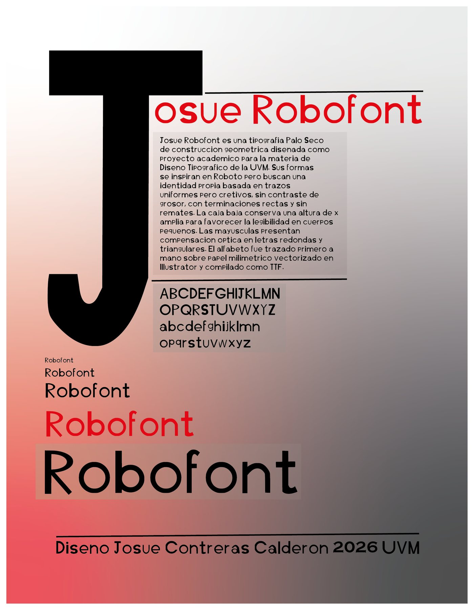
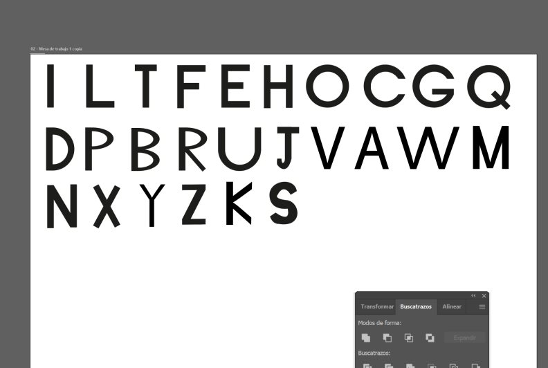
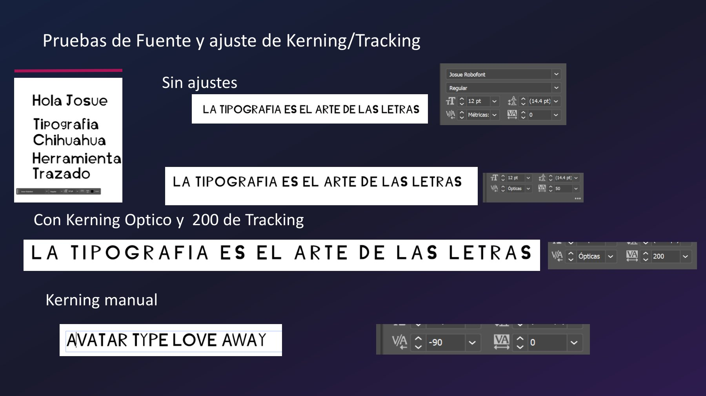

Tipografía e identidad · 2026
Josue Robofont
Tipografía palo seco de diseño propio
- Contexto
- Taller de Diseño y Composición Tipográfica, UVM
- Fecha
- mayo de 2026
- Mi rol
- Diseño de la tipografía, vectorización, espaciado y cartel de presentación
- Herramientas
- Papel milimétrico, Adobe Illustrator, Calligraphr

El reto
Diseñar una tipografía palo seco de construcción geométrica, inspirada en Roboto pero con identidad propia, y convertirla en una fuente que se pueda instalar y usar.
Proceso
Tracé el alfabeto a mano sobre papel milimétrico, lo vectoricé en Illustrator y lo compilé como TTF. La plantilla de FontForge se corrompió, así que cambié a Calligraphr, una herramienta web, para no detener el proyecto.
Después probé la fuente en texto real y ajusté el tracking y el kerning manual en pares como AV y AW. La caja baja conserva una altura de x amplia para leerse bien en tamaños pequeños.
Resultado
Todavía hay inconsistencias de proporción que quiero corregir, y el siguiente paso es agregar acentos, la ñ y los números. Aun así, ya es una fuente instalable: el texto de muestra de esta página está escrito con ella.
Josue Robofont
ABCDEFGHIJKLMNOPQRSTUVWXYZ
abcdefghijklmnopqrstuvwxyz
La tipografia es el arte de las letras
Texto real escrito con la fuente, no una imagen. Todavía no incluye acentos ni números; los agregaré en la siguiente versión.

